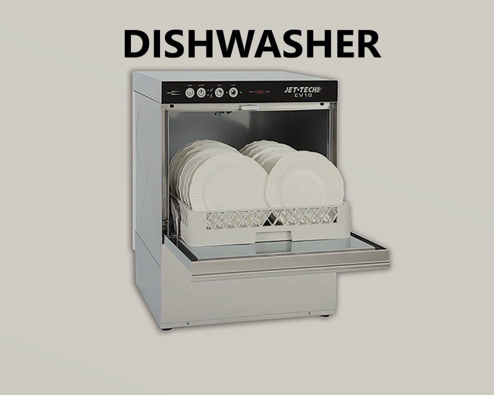
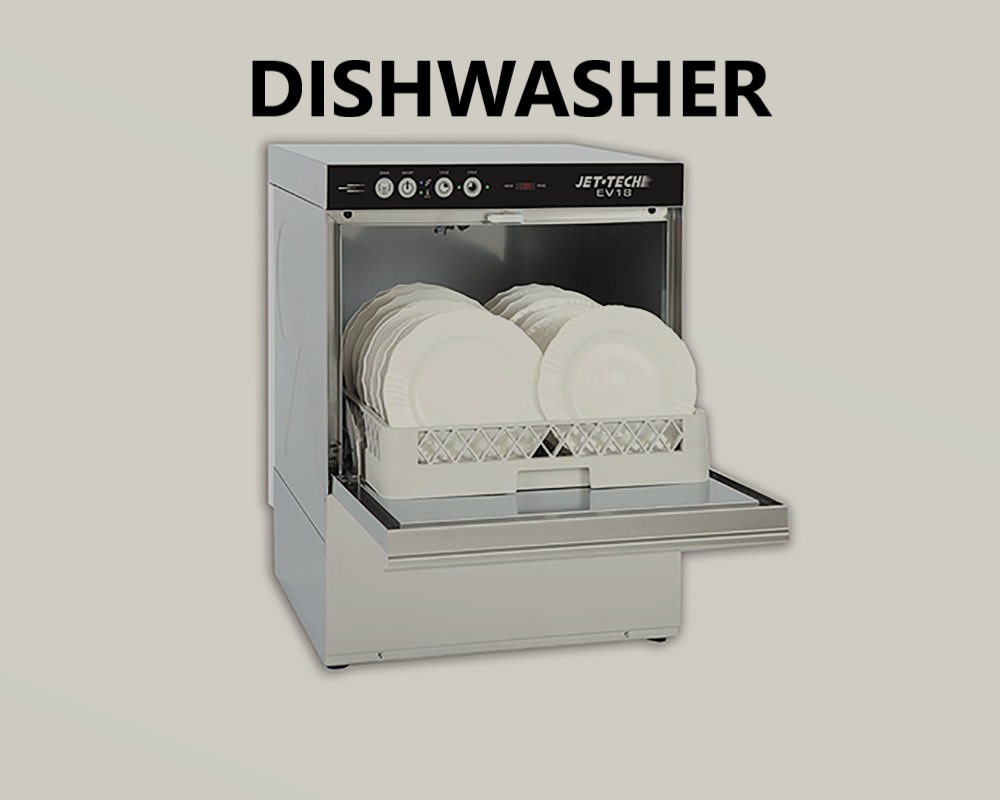
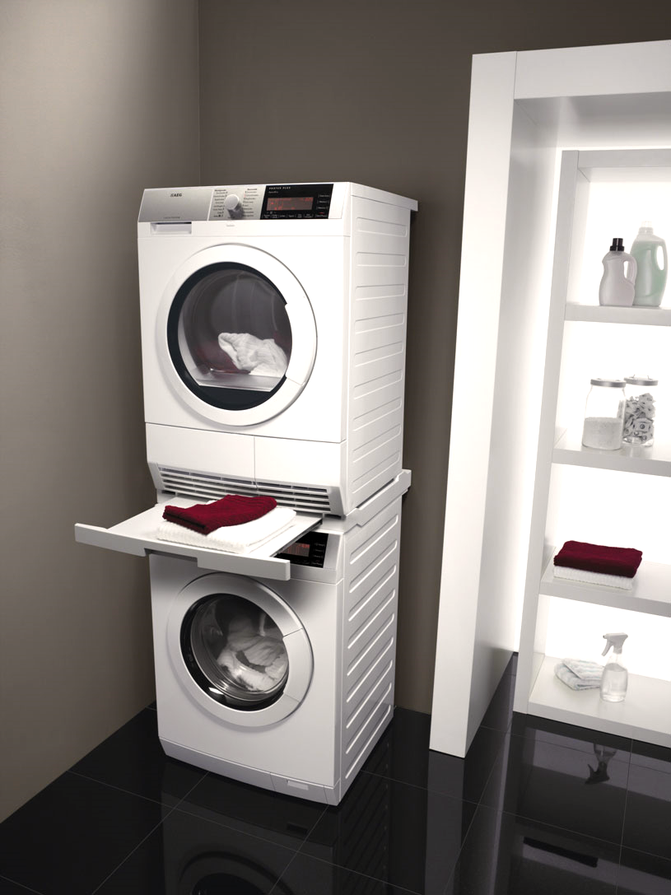
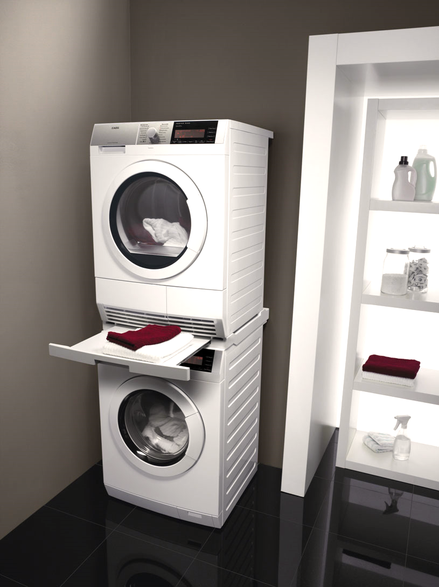
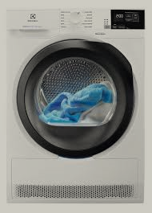
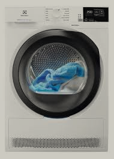

 

 

If you find yourself in a situation where your washing machine is not draining or spinning.
It can be quite frustrating. However, it's important to stay calm and tackle the issue step by step. There are several possible reasons why your washer may not be draining or spinning, and below we will discuss some common troubleshooting techniques to help you resolve the problem.
Washing Machine stopped full of water.first you need to check whether the door of the washing machine is closed properly or not, if the door opens, then you need to replace the lock of the washing machine, and maybe the handle or hook, this should all be checked by a specialist technician, or maybe a control board . also check whether the washing machine is level, this can also be a problem and the washing machine is not level and may not work well, also check all the legs of the washing machine, they can be adjusted against vibration and the level will be negative and the washing machine will work with problems.
Secondly, check the washer's lid switch. Many washers have a safety mechanism that prevents the machine from draining or spinning if the lid . Make sure the sensor is closed properly and examine the sensor to see if it is functioning correctly. If necessary, replace the sensor to restore normal operation.
Another possibility is a faulty motor .
This component connects the motor to the transmission and can become worn out over time.
If the motor is broken or damaged, it will prevent the washer from draining or spinning.
In this case, you will need to replace the motor to restore proper functionality.
It is also important to check the washer's sensor for any issues.
The main sensor is responsible for removing water from the machine, and if it is malfunctioning,
the washer may not drain properly. Make sure the sensor is and free from .
If the sensor is damaged, it will need to be replaced.
In some cases, the problem may not be mechanical but rather related to the control board or timer. A malfunctioning control board or timer can disrupt the normal cycle settings and prevent the washer from draining or spinning. If you suspect an issue with either of these components, consult a professional technician in Vancouver to diagnose and repair the problem.
Overall, when faced with a that is not draining or spinning, it is important to approach the troubleshooting process systematically. Check for in the walve water or , inspect the sensor, examine the motor , and ensure the pump is functioning properly. If all else fails, Also, washing machines are equipped with from 3 to 7 taps, if one tap does not work well, then everything else may not work well due to lack of water, and the washing machine sees that there is not enough water inside and may malfunction. Consider seeking professional help to resolve the issue and get your washing machine back to its optimal performance.
First, we need to come to you and find out that your washing machine, dishwasher or refrigerator or electric stove is broken,
and we need to accurately disassemble it all and accurately diagnose you to find out the cause of the breakdown, this does not happen so quickly.
I need to come and disassemble this equipment, so we are doing this for you to understand exactly what was broken inside.
The cost of repairing a washing machine depends on the internal breakdown, but I can roughly say that the cost starts from $350, I can’t say for sure because
All washing machines and dryers have various breakdowns, which we repair and after our repair, the equipment can work for several more years if you use it correctly,
we give advice on how to use it correctly, also our experience is 12 years, this is very important for us and we know how save money,
because nowadays a lot of new equipment works from 3 to 5 years, and after this period we simply extend the life for another 3 years and you use it and rejoice.
So I can safely say that you should not be afraid that your dishwasher is broken , no problem, we can fix it, and if the Samsung refrigerator does not turn on and does not cool
and the light inside is on, we can fix it, but there are many different reasons with GE refrigerators when ice forms inside, then it is better to call us right away and not prolong the time
I know how to save energy and water, just listen to these useful tips if you use your washer and dryer often. and I know that you use the washer and dryer every day. I will easily tell you this and give you these simple tips, the washing machine uses water and electricity, and if you use a program with a high load of laundry,
then accordingly the washing machine uses 2 times more water, and two rinses, when the washing machine finishes washing on this program, the washing machine uses 2 times more energy, use cold water, it saves your costs on hot water, use a small load of laundry, it saves water,
use one rinse when you select a program, set a small load and one rinse,
Second tip The pillows and duvet need to be washed every week. If you want to wash the duvet and pillows it may not fit in the washing machine, Just wet the pillows and blanket with water, and then you can easily put it in the washing machine, Remember these useful tips) No thanks needed) 6043796918 Call us for help
Home appliance repair near me, I am always with you and can come to you in Burnaby, Vancouver Coqutlam, Surrey, don’t worry,
I can fix home appliances at your home.
- Repairing a kitchen sink garburator is a task that anyone living in modern cities like Vancouver, Burnaby, and Coquitlam can face.
- Garburators are integral to kitchen appliances, making cooking easier by quickly disposing of leftovers.
- Like any electrical appliance, garburators can malfunction for various reasons.
- The most important step in the repair process is diagnosing the problem.
- Diagnosing the issue involves:
- Listening closely to the sounds the device makes.
- If the shredder does not turn on, the problem may lie in the wiring or fuse.
- If it works but does not shred food, check for jammed objects or worn blades.